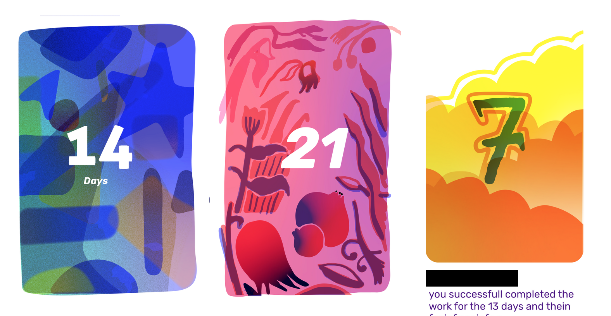

Process
This has 3 parts:
\1. Examples of illustration style systems where people have pulled it off successfully.
\2. a framework that we can use to find out an illustration style that works for you| process.
\3. about me, what insights I have, how can i help.
Following is written with the assumption that you are still in the process of designing an authentic illustration style, if you already have it, we can directly jump to making illustrations.
1. what makes a good illustration system and then a good set of illustrations.✺✺✺✺✺✺
Just like branding, what defines an illustration style is what remains constant across everything, People achieve this in many different ways.
- Some brands achieve this by keeping the shapes that they use as constant(IBM’s illustration guidelines),
- some do it by using a color palate,
- by doing both,
- some by using a certain roughness in strokes(mailchimp, their guidelines),
- some by making Mascots and keeping them in every illustration(crio.do)(slanglabs)(dunzo, although dunzo also uses other things also),
- Sometimes they do it by keeping the subject depicted the same but by drawing it differently.(Airtime, who in all their illustrations showed the same thing, be it onboarding screens or websites,“friends watching tv together”, how did they vary it? Sometimes they made them sit on a sofa and watch, sometimes they were standing up and watching, sometimes they were watching in a theater, sometimes the composition was the same but the friends were changed)
Different approaches are based mainly on 2 things 1. what the voice of the brand is, and 2. how communicative we want the illutstrations to be.
Let’s look at some Examples:
Here are some of my favorites, these include some extreme examples and we probably have to land somewhere in the middle.
IBM’s illustration style:
they try to be very particular about their shapes and colors, even tell you what kind of colors to use, about the grid everything needs to use, the minimum distance between 2 elements and they even tell you which angles to use with what. This kind of system is very well thought out, probably very hard to make because you are basically determining the rules for any possible story/character that comes up. although not everyone needs this system, it is something to look at: you can find out more about this at https://www.ibm.com/design/language/illustration/overview/
The voice of this style is very sincere, futuristic, consistent, highest standard, use of maths.(which is appropriate for them, since they are such a big company, and they are trying to maintain the highest standard of image.)

figure1: IBM illustration guidelines/kit for illustrator, there’s a lot more to the kit than this.
Mailchimp’s illustration style:
below are a couple of screenshots from Mailchimp’s product and website.
What is keeping their style constant “use of rough brush strokes”,
“the subject matter always is dependent on the copy, it doesn’t matter anything by itself”,
“use of flora and fauna”,
“highly context based”
“only black ink”
“when given a choice between showing an emotion and action, always choosing emotion”

again you can read more of thier guidelines here: Mailchimp’s illustration guidelines
also, this makes sense for them, since a lot of their users are small business owners, or startups.
Another non extreme example is Opfin:

they are trying to find just a visual quirk while following this color palate, and some angular shapes.
there are many other illustration styles where the can be from “keeping all the illustrations from Memphis style” to very subtle styles like this one:
2. How do we find our style & process? ✺✺✺✺✺✺✺✺✺✺✺✺✺✺✺✺✺
Till now I’ve shown you that an illustration style can be approached in so many ways, but how can we make one that is ours?
So, I’ve developed a framework to think about this.
Here’s the framework:
Branding: let’s break down the branding into 2 things.
a. Subject/story in the illustration(what is being said in the visual): so for example for showing a voice app, we can either show a mic, or show a mouth speaking into a mic, or just a mouth and so on.

b. visual style of the illustration(how it looks like): the color palate used, the composition weather it is with perspective or everything is on a flat surface, weather we are using icons to represent the mic or drawing a real mic instead.
The voice of the brand answers these questions.
Let’s apply this framework in Mail-chimp’s example:
a. the story being told is something that is a whimsical one, something that has characters
b. the visual quality mimics a drawing on a paper,
and the voice determined that it should be these things.
so for example in one of my works, I was supposed to make a screen that will open when the user achieves a milestone, now i thought it will be good to make
so even though the colors are not the same, but still there’s some similarity in these. what is that? its the consistency
a. the story that we are telling here/what is being depicted here is an abstract landscape/world
b. and the visual quality is that it should replicate watercolor

to see some more styles that I’ve created.
what makes individual illustrations good? time and attention, this is not to say that an illustration made in 40 hours will always be better than one made in 5 hours. that time could also be the iteration time, or the time that went into honing one’s craft. Its really not about the shapes. here’s a blog by adobe’s principle designer critisizing this, although the shapes and the colors and everything else is there, in a follow up blog he shows people in tech who’ve got it right. https://www.subtraction.com/2018/01/03/two-different-kinds-of-illustration/
Process: We can go about making these by first writing down the copy and the purpose of all the illustrations,
then I can make a couple of illustrations in different styles as options for the same copy,
then we’ll iterate on the one that gets selected, and
finally make the rest of the illustrations in that style.
3. About me, why I want to do it, why we can work together to make something great?✺✺✺✺✺✺✺✺✺✺✺✺
this is what you get with me

\1. Let’s look at circle 2, this is a result of reading this article a long time ago where Khoi Vinh is showing how monoculture illustrations in tech are. https://www.subtraction.com/2018/01/03/two-different-kinds-of-illustration/
\2. Design systems knowledge: have made different illustration systems before: slanglabs, habitwave, one more client which i cant name right now.
\4. Learning: Can learn a lot since there’s a whole design team with good designers, giving feedback, that will help me a lot in future as, an illustrator’s clients are usually designers.
\3. Such a good opportunity: If I do good, make something very nice, it will such a good addition to my portfolio, for getting foreign clients.
\4. versatility, make things according to use case: always worked with different styles, never pushing for my personal style(i keep that only to my personal instagram). If I make something it will look like urbancompany’s style, and not the illustrators style.
here are the 2 things showing the breadth:

first one was for a fashion brand, and the second for a app’s promotional website.
\5. Pricing: the pricing is usually based on the use-case of the illustration. In my usual pricing doc(not applicable to you, for you it will be a bit higher since here we’ll have to iterate more) there are 3 options- blog illustrations(cheapest), In-App illustrations, Homepage/landing page(most expensive).
More resources
\1. use this to get better communication with the person you end up hiring as an illustrator, this will avoid any unknown unknowns: https://tyrus.design/
Explore more pages: Portfolio